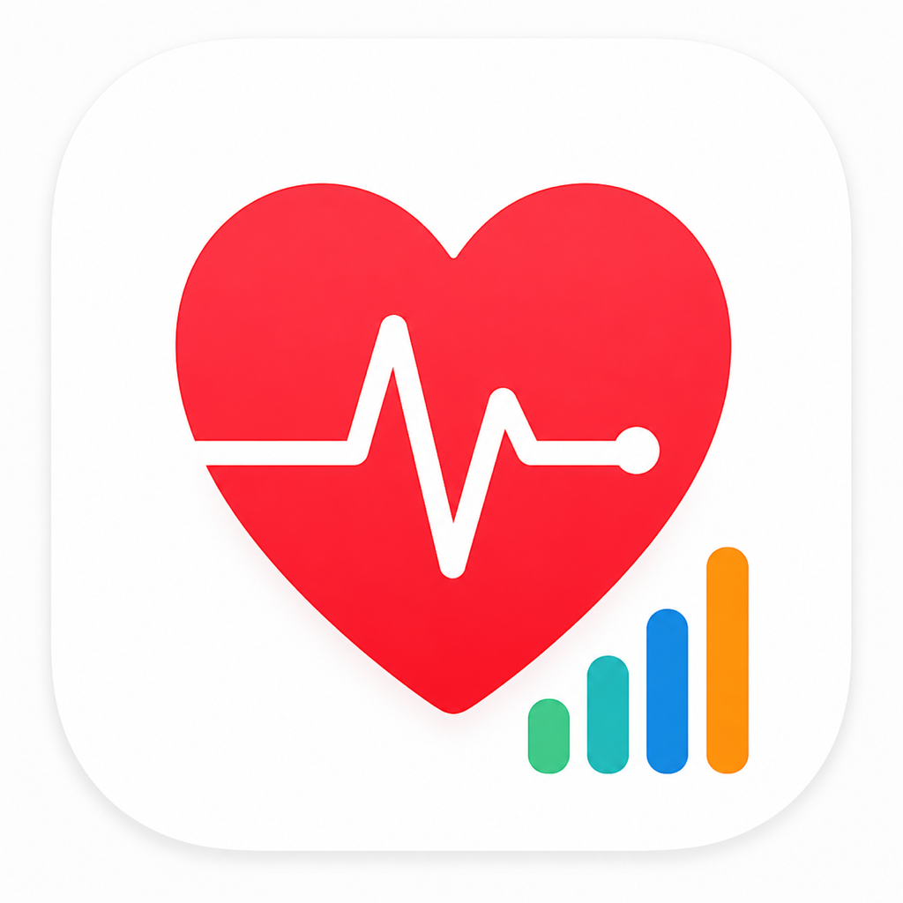
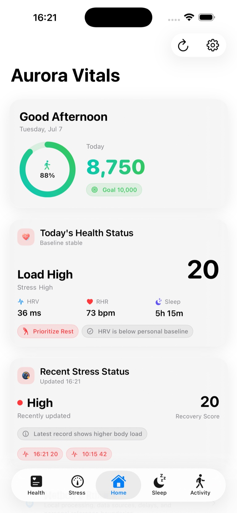
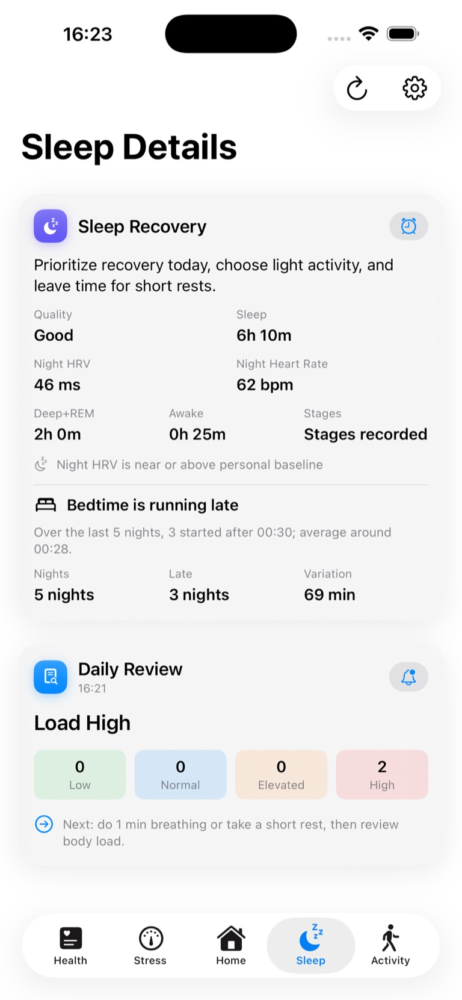
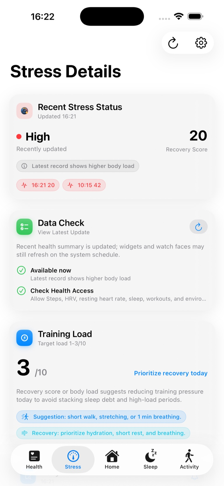

No account
Open the app and use your existing health data.

Aurora VitalsRecovery · Sleep · HRV · Body load
Aurora Vitals turns health data already on your iPhone and Apple Watch into one calm daily view—without an account or health-data upload.
Open the app and use your existing health data.
Supported health data is processed on device.
Optional lifetime unlock. No subscription.
One daily story
Compare personal trends, see what changed overnight and spot body-load patterns without digging through raw metrics.



Personal experiments
Record sunlight, breathing, workouts and other daily habits, then see how they relate to sleep and recovery trends. Aurora Vitals shows associations—not cause-and-effect claims.
Free to download for iPhone and Apple Watch.